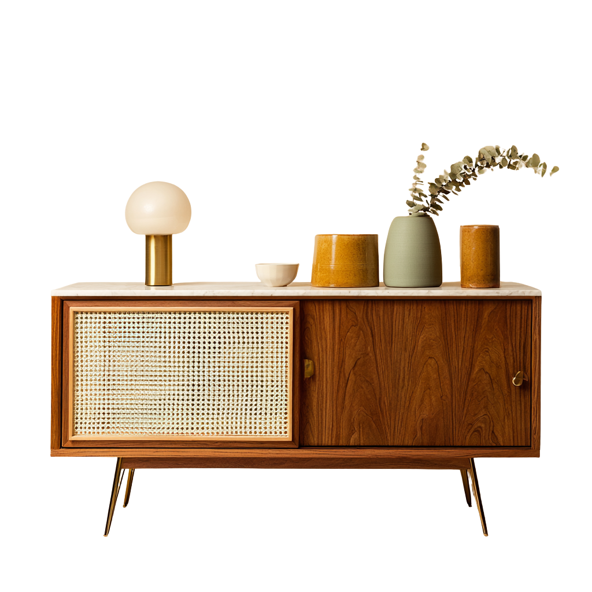

El redescubrimiento de un arte olvidado
Cada pieza cuenta la historia de manos expertas y materiales nobles, hecha para envejecer con gracia.
Ver productos
30 años de tradición
Hermanos Jota nace en la intersección entre herencia e innovación, donde la calidez del optimismo de los años 60 se encuentra con la conciencia de la sustentabilidad de hoy. Desde 1996 combinamos técnicas artesanales con diseño atemporal pensado para la vida cotidiana.
Trabajamos con madera certificada FSC de bosques responsables argentinos, priorizando maderas nativas y acabados naturales. Cada pieza que sale de nuestro taller no es solo mobiliario: es una filosofía de vida que honra el pasado mientras abraza el futuro.